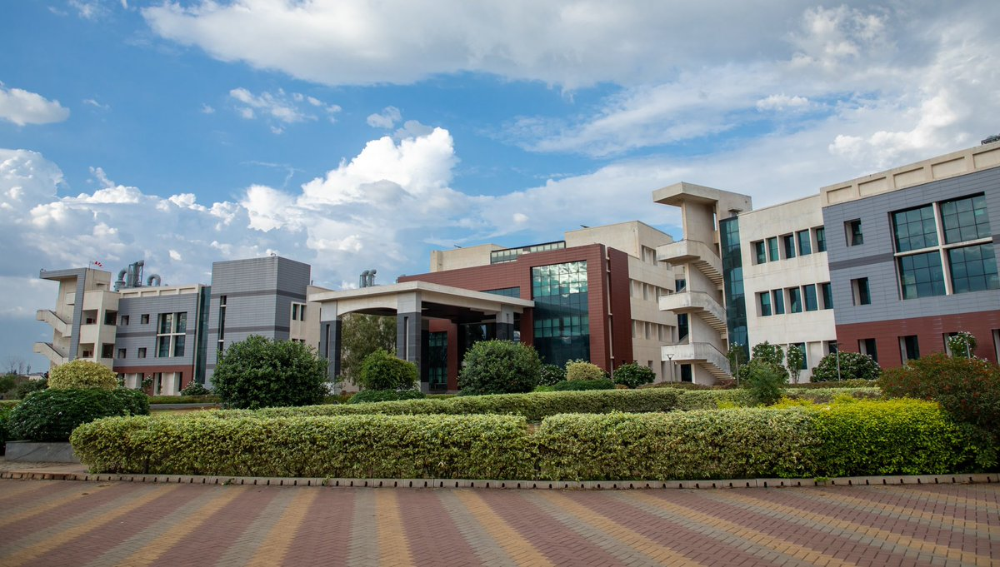
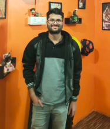
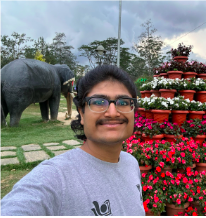
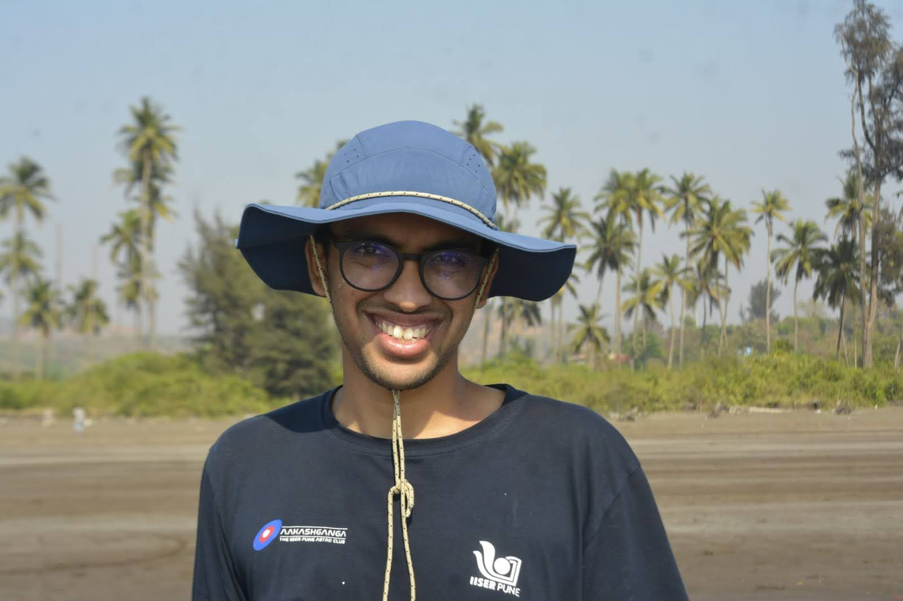

Research Group
Hello! We are part of the Cosmology group at IISER Pune. We work on a variety of topics in cosmology, ranging from simulating different models of Dark Matter and Neutrinos to utilizing higher order cross correlations to better constrain and understand cosmology. Exploring even new open questions in Cosmology.
PhD Students
 Vikhyat Sharma
Vikhyat Sharma
Details about Vikhyat Sharma.
Eishica Chand
I have been working with Arka since May 2022. I initially started by writing a toy-model N-body code.
Then, I began working on higher-order statistics, namely k-nearest neighbor (kNN) measurements.
We collaborated with Dr. Simon Foreman and Dr. Francisco Villaescusa-Navarro to demonstrate the enhancement in the HI-galaxy cross-clustering signal
within the IllustrisTNG300 simulation using the kNN-field framework, compared to traditional two-point statistics (2PCFs).
Here’s the manuscript: https://doi.org/10.1093/mnras/staf433.
Currently, I am working on modeling aspects of kNN statistics to enable stringent constraints on cosmological parameters.
Yash Kaushal
I have been working with Arka since August 2023. My research aims to constrain the micro-physical nature of Dark Matter. More specifically to study effects of Dark Matter self-interaction on the structure formation. My work involves modifying the N-body cosmological simulation code GADGET-2 to include elastic self-scattering interactions to understand how such interactions alter the structural properties of dark matter halos. To capture halo-scale physics with high resolution while retaining large-scale cosmological context, I run zoom-in simulations. Looking ahead, I plan to extend this framework to include dissipative SIDM models and explore other SIDM models as well. A key goal is to compare these outcomes with the standard Cold Dark Matter (CDM) predictions and identify observational signatures that can distinguish between them.
Master's Thesis Students

Kaustubh Rajesh Gupta (Alumnus) ;
PhD Student @ Swinburne University of Technology
Working with Arka since August 2021, I am broadly interested in the spatial distribution of celestial objects such as galaxies and binary black holes (BBHs) that trace the large-scale structure of the universe. My research involves measuring the clustering properties of these tracers using powerful clustering statistics such as the k-nearest-neighbour (kNN) distributions, and using these measurements to inform our understanding of cosmology. Over four semester projects, I investigated the impact of halo properties other than mass on the clustering of cluster-scale dark matter haloes in cosmological simulations, a phenomenon known as secondary halo bias. For my Master’s Thesis, I studied the spatial cross-correlation between galaxies and BBH merger events detected by LIGO (our paper!). Presently, I am conducting forecast studies for BBH-galaxy cross-correlations using the next generation of gravitational wave detectors and working on an exciting group project to publish the kNN codes we have developed over the years as a Python package. In May 2025, I am joining the Centre for Astrophysics and Supercomputing at Swinburne University of Technology as a PhD student, where I will work with Prof. Karl Glazebrook, Prof. Glenn Kacprzak and Dr. Tania Barone on mapping cool gas around galaxies in strong gravitational lens systems.
Kwanit Gangopaddhay
I have been working with Arka since August 2022 on various topics. My first project involved measuring the effect of massive neutrinos on large-scale structures in the universe. Later, we collaborated with Prof. Tom Abel to explore geometric interpretations of the k-Nearest Neighbour (kNN) distribution and its connection to other non-Gaussian clustering statistics like Minkowski Functionals and Persistent Homology. Currently, I’m working with Prof. Tirthankar Roy Choudhury and Anirban Chakroborty on using kNN statistics to distinguish between different models of reionization.
Semester Project Students
Harrsh Goyal
Ever drawn to the fundamental mysteries of the Universe, I began a project comparing various Dark Matter models (CDM, SiDM, FDM, etc.) using weak gravitational lensing peak statistics with Arka in January 2023. This project proved invaluable to my academic journey as it deepened both my research experience and understanding of Dark Matter.
Subhankar Datta
Since August 2023, I have been working under the supervision of Arka on a project aimed at measuring secondary halo bias for cluster sized haloes—commonly referred to as secondary halo bias. This phenomenon describes the dependence of halo clustering on properties beyond halo mass. My study specifically focuses on halo concentration as the secondary property of interest. Understanding the clustering of dark matter halos is crucial for probing the processes underlying structure formation in the Universe and for constraining cosmological parameters. To quantify clustering, I employ both traditional two-point correlation functions and the k-Nearest Neighbor (kNN) CDF as summary statistics. Currently, I am applying this analysis to observational data from the Atacama Cosmology Telescope (ACT) and the Dark Energy Survey (DES), with the goal of detecting secondary halo bias in real data.
Saptarshi Pandey
Since August 2024, I have been working with Arka on N-body cosmological simulations to study structure formation in a two-fluid framework involving
cold dark matter (CDM) and massive neutrinos as a subdominant, free-streaming component. Building on the generalized two-fluid approach from
Xu et al. (2021),
I’ve been incorporating neutrinos directly as a separate collisionless species in simulations. While my focus is on the two-fluid setup,
the group’s broader goal is to extend it to a three-fluid model including LiMRs—currently being pursued by PhD student Vikhyat Sharma.
Starting May 2025, I will undertake my Master’s thesis under the joint supervision of Arka and Prof. Elena Giusarma at Michigan Technological University.
The project explores the use of deep generative models to generate realistic cosmological simulations incorporating non-standard physics
such as modified gravity and massive neutrinos.
Om Hebbar
Since August 2024, I’ve been investigating baryonic effects on matter distribution in Cosmology. We started by using the Spherical Collapse model to describe the probability distribution of dark matter under gravitational evolution and compared that with simulations. We aim to explore how baryonic effects alter these predictions and seek ways to decouple them from gravitational dynamics.
Anargha Mandal
Neutrinos, although very light, are numerous enough to affect structure formation in the universe. Inverting the setup, we can try to infer constraints on neutrino mass from how matter clusters in the cosmos. Since August 2024, I have been investigating how cross-correlations between the 3D matter field and the positions of halos can help us predict theoretical constraints on the total mass of neutrino flavors for upcoming cosmological surveys. One of the primary goals of the project is to evaluate whether the k-nearest neighbour formalism for tracer-field cross-correlations can give tighter constraints than the conventional two-point cross-correlation function.